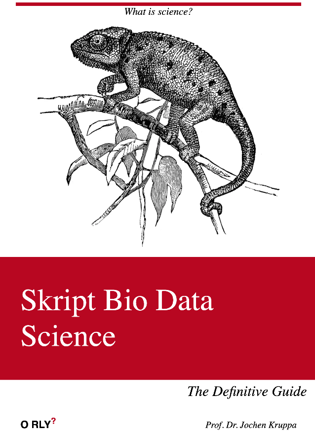

Skript Bio Data Science
Der endgültige Leitfaden
Willkommen

“So einfach wie möglich. Aber nicht einfacher.” — Albert Einstein
In diesem Skript wirst du umfangreiche Kenntnisse über Statistik und Data Science erwerben können, ohne dass du an einer meiner Veranstaltungen teilnehmen musst. Du bist herzlich eingeladen, hier und dort dich einzulesen, um zu sehen, ob etwas für dich von Interesse ist. Das Skript wird kontinuierlich von mir aktualisiert. Zusätzlich zu den Skripten stehen dir auch erläuternde YouTube-Videos zur Verfügung. Es freut mich, dass du daran interessiert bist, hier etwas Neues zu lernen, sei es aus eigenem Antrieb oder weil du dich auf eine anstehende Klausur vorbereiten möchtest. In jedem Fall empfehle ich dir, dich einfach um zuschauen. Lass dich nicht vom Umfang erschrecken, dass ist so passiert… das Fach ist auch umfangreich.
Dieses Skript soll wie immer sehr viele Ziele verfolgen. Damit wir nicht das Kind mit dem Bade ausschütten, habe ich im Folgenden nochmal aufgeschlüsselt, was oder wofür du eventuell lernen willst. Es macht nun mal einen nicht unerheblichen Unterschied, ob du die Klausur bestehen willst, eine Abschlussarbeit schreibst oder gar ein Projekt auswerten willst. Im Weiteren wirst du hier ab und zu das Bild eines niedergeschlagenen Engels der Statistik sehen.

Was hat der Engel zu bedeuten? Wenn du den niedergeschlagenen Engel der Statistik siehst, dann haben wir mal wieder etwas in der Theorie abgekürzt. Ich habe mir nämlich folgende Leitlinien bei dem Schreiben vom Skript hier gesetzt:
- Wir opfern Genauigkeit für Anwendbarkeit. Ja, manchmal ist es eben statistisch nicht exakt richtig was hier steht, aber aus Gründen der Anwendung fahren wir mal über den Engel drüber.
- Wir sind hier Anfänger und Anwender. Später kannst du noch tiefer ins Detail gehen. Hier wollen wir die Grundlagen lernen. Das hat dann einen Preis an Richtigkeit und Korrektheit. Aber wir lassen das Perfekte nicht den Feind des Guten sein.
- Wir wollen fertig werden. Durch geschicktes Manövrieren können wir an einen Punkt kommen, wo kein statistischer Test mehr passt. Das wollen wir nicht. Deshalb zahlen wir hier auch einen Preis. Passt aber.
Deshalb ist alles manchmal nicht so mathematisch genau wie es sein könnte, aber es reicht um mit dem Material hier sinnvoll zu arbeiten. Wir wollen ja ins Tun kommen und nicht nur die Sachen hier theoretisch überdenken.
Lernen auf YouTube
Du liest gerade das Skript für meine Vorlesungen an der Hochschule Osnabrück in der Fakultät Agrarwissenschaften und Landschaftsarchitektur (AuL). Um den Stoff, den ich vermitteln möchte, zu erlernen, stehen dir verschiedene Möglichkeiten offen. Neben meinen Vorlesungen kannst du auch auf YouTube lernen, indem du meine Lernvideos anschaust. In den Videos wiederhole ich Inhalte der Vorlesung sowie der R Programmierung. Der große Vorteil ist aber, dass du auf Pause drücken und dir Inhalte wiederholt anschauen kannst. Gerne kannst du dir einmal das Einführungsvideo anschauen.
Lernen für die Klausur
Im Weiteren findest du meine gesammelten Klausurfragen für alle Module auf GitHub unter folgendem Link: gesammelten Klausurfragen auf GitHub oder auf ILIAS im entsprechenden Modul. Die Klausurfragen zu den einzelnen Vorlesungen innerhalb eines Moduls werden in den entsprechenden Übungen behandelt. Zusätzlich gibt es ein Archiv, das alle bisherigen Klausuren über alle Studiengänge hinweg enthält. Dieses Archiv findest du hier: Archive aller bisherigen Klausuren. In der  Playlist der Fragen & Antworten findest du nochmal alle Antworten zu den Klausurfragen kurz besprochen.
Playlist der Fragen & Antworten findest du nochmal alle Antworten zu den Klausurfragen kurz besprochen.
Lernen für ein Projekt
Dir ist das alles irgendwie zu stückig und gekünstelt? Dann habe ich noch die Spielwiese in R für dich. Dort zeige ich an Beispielen wie die Statistik, das Programmieren in R und die Data Science zusammenkommt. Da es hier dann doch recht eng wurde, habe ich das Kapitel Beispielhafte Auswertungen dann einmal auf eine andere Internetseite ausgelagert. Jetzt findest du alle Beispiele zur der Anwendung auf der neuen Internetseite. In dem neuen Skript gibt es dann aber keine weiteren Informationen mehr zu dem R Code oder der Statistik. Gerne kannst du dir einmal das Einführungsvideo für die Playlist der Spielwiese anschauen.
Kontakt
Noch Fragen? Wie erreichst du mich? Am einfachsten über die gute, alte E-Mail. Bitte beachte, dass gerade kurz vor den Prüfungen ich mehr E-Mails kriege. Leider kann es dann einen Tick dauern. Einfach an j.kruppa@hs-osnabrueck.de schreiben. Du findest hier auch eine kurze Formulierungshilfe. Bitte gib immer in deiner E-Mail dein Modul - was du belegst - mit an. Pro Semester unterrichte ich immer drei sehr ähnlich klingende Module. Daher schau nochmal hier in der Liste, wenn du unsicher bist.
Hallo Herr Kruppa-Scheetz,
… ich belege gerade Ihr Modul Modulname und hätte eine Bitte/Frage/Anregung…
… ich benötige Hilfe bei der Planung/Auswertung meiner Bachelorarbeit…
Mit freundlichen Grüßen
M. Muster
Weiteres
Hier finden sich wichtige Tools & Tipps für meinen organisatorischen Ablauf in meine Veranstaltungen. Also eigentlich nichts von allgemeinen Interesse.